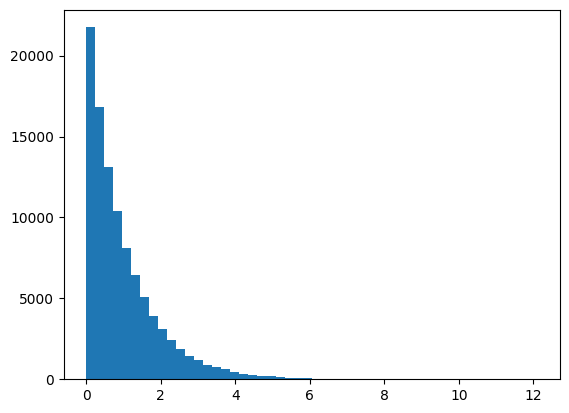
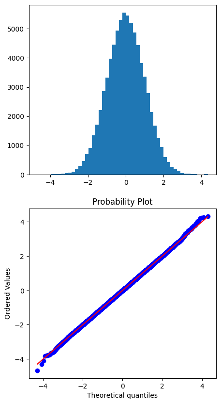
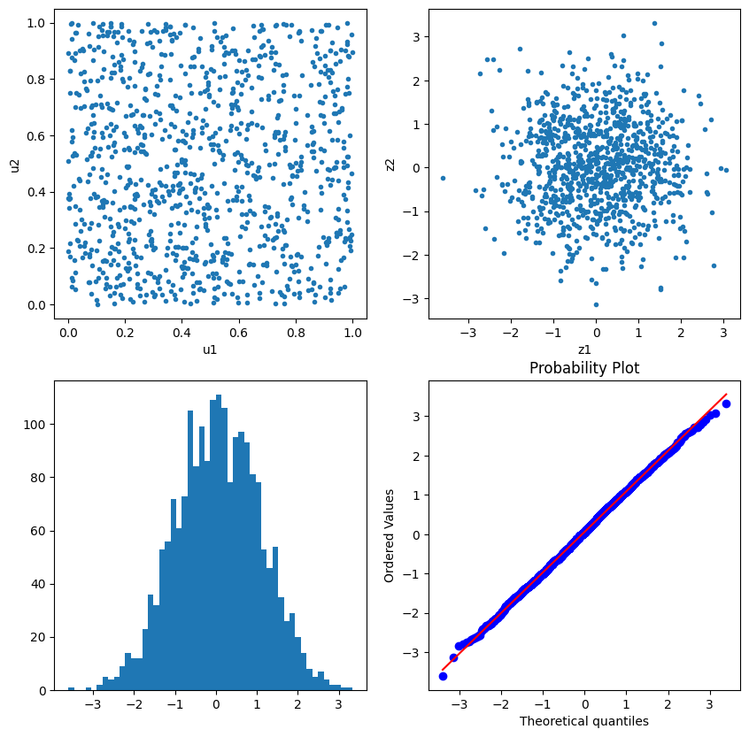
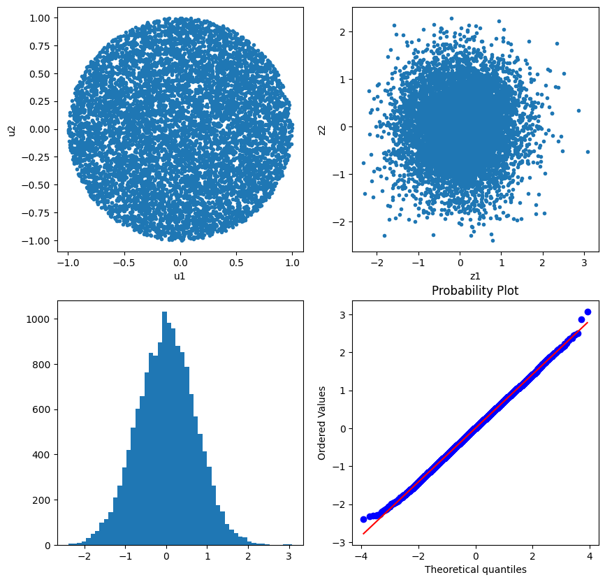

import os
if os.getcwd()!='/Users/hwan/Desktop/Homepage/study_24fall/실습':
os.chdir('실습')
os.getcwd()'/Users/hwan/Desktop/Homepage/study_24fall/실습'import os
if os.getcwd()!='/Users/hwan/Desktop/Homepage/study_24fall/실습':
os.chdir('실습')
os.getcwd()'/Users/hwan/Desktop/Homepage/study_24fall/실습'import numpy as np
import pandas as pd
import matplotlib.pyplot as plt
import scipy.stats as stats
f = lambda x: 2/np.sqrt(2*np.pi)*np.exp(-x**2/2)
g = lambda x: np.exp(-x)
Ginv = lambda x: -np.log(1-x)
x = np.linspace(0,5,501)
c = np.sqrt(2/np.pi)*np.exp(0.5)
#c = 1
plt.plot(x,f(x)/(c*g(x)))
plt.show()plt.plot(x,f(x))
plt.plot(x,c*g(x))
plt.show()#random sampling from Exponential dist.
n = 100000
e = np.random.rand(n)
x = Ginv(e)
plt.hist(x, bins=50)
plt.show()
#acceptance-rejection
u = np.random.rand(n)
idx = u < (f(x) / (c*g(x)))
y = x[idx]
#signx
s = np.random.rand(len(y))
sign = (+1)*(s>0.5) + (-1)*(s<=0.5)
z = y * sign
fig, ax = plt.subplots(2,1,figsize=(5,10))
ax[0].hist(z, bins=50)
stats.probplot(z, dist="norm", plot=ax[1])
plt.show()
# accept된 갯수, 통계량
z = pd.Series(z)
print("Size = ", len(z))
print("Mean = ", z.mean())
print("Std = ", z.std())
print("Skewness = ", z.skew())
print("Kurtosis = ", z.kurt())Size = 76149
Mean = -0.0007738332678312738
Std = 1.0026630200413653
Skewness = 0.0014052484620287072
Kurtosis = 0.02832094979234201import numpy as np
import pandas as pd
import matplotlib.pyplot as plt
import scipy.stats as stats
u1 = np.random.rand(10000)
u2 = np.random.rand(10000)
z1 = np.sqrt(-2*np.log(u1))*np.cos(2*np.pi*u2)
z2 = np.sqrt(-2*np.log(u1))*np.sin(2*np.pi*u2)
fig, ax = plt.subplots(2,2,figsize=(10,10))
ax[0,0].plot(u1,u2,'.')
ax[0,0].set_xlabel("u1")
ax[0,0].set_ylabel("u2")
ax[0,1].plot(z1,z2,'.')
ax[0,1].set_xlabel("z1")
ax[0,1].set_ylabel("z2")
z = np.concatenate([z1,z2])
ax[1,0].hist(z, bins=50)
stats.probplot(z, dist="norm", plot=ax[1,1])
z = pd.Series(z)
print("Mean = ", z.mean())
print("Std = ", z.std())
print("Skewness = ", z.skew())
print("Kurtosis = ", z.kurt())Mean = -0.0005109536692502728
Std = 1.0033155307284243
Skewness = 0.02486394723725498
Kurtosis = 0.004147895282052172import numpy as np
import pandas as pd
import matplotlib.pyplot as plt
import scipy.stats as stats
u1 = np.random.rand(1000)
# u1 = np.array(np.repeat(0.2,1000))
u2 = np.random.rand(1000)
# u2 = np.repeat(0.3,1000)
z1 = np.sqrt(-2*np.log(u1))*np.cos(2*np.pi*u2)
z2 = np.sqrt(-2*np.log(u1))*np.sin(2*np.pi*u2)
fig, ax = plt.subplots(2,2,figsize=(10,10))
ax[0,0].plot(u1,u2,'.')
ax[0,0].set_xlabel("u1")
ax[0,0].set_ylabel("u2")
ax[0,1].plot(z1,z2,'.')
ax[0,1].set_xlabel("z1")
ax[0,1].set_ylabel("z2")
z = np.concatenate([z1,z2])
ax[1,0].hist(z, bins=50)
stats.probplot(z, dist="norm", plot=ax[1,1])((array([-3.39232293, -3.14126578, -3.00201262, ..., 3.00201262,
3.14126578, 3.39232293]),
array([-3.60306231, -3.13548782, -2.83263488, ..., 3.03258201,
3.06619721, 3.32173166])),
(1.0327708990587872, 0.05466952756732349, 0.9996989636334398))
z = pd.Series(z)
print("Mean = ", z.mean())
print("Std = ", z.std())
print("Skewness = ", z.skew())
print("Kurtosis = ", z.kurt())Mean = 0.05466952756732329
Std = 1.0317810356699553
Skewness = -0.018633416552330598
Kurtosis = -0.17031449124549036import numpy as np
import pandas as pd
import matplotlib.pyplot as plt
import scipy.stats as stats
u1 = 2*np.random.rand(10000) - 1
u2 = 2*np.random.rand(10000) - 1
idx = u1**2+u2**2<1
u1 = u1[idx]
u2 = u2[idx]
r = np.sqrt(u1**2 + u2**2)
z1 = u1*np.sqrt(-2*np.log(r)/(r**2))
z2 = u2*np.sqrt(-2*np.log(r)/(r**2))
fig, ax = plt.subplots(2,2,figsize=(10,10))
ax[0,0].plot(u1,u2,'.')
ax[0,0].set_xlabel("u1")
ax[0,0].set_ylabel("u2")
ax[0,1].plot(z1,z2,'.')
ax[0,1].set_xlabel("z1")
ax[0,1].set_ylabel("z2")
z = np.concatenate([z1,z2])
ax[1,0].hist(z, bins=50)
stats.probplot(z, dist="norm", plot=ax[1,1])((array([-3.92157497, -3.70243821, -3.58239836, ..., 3.58239836,
3.70243821, 3.92157497]),
array([-2.39692813, -2.31770256, -2.29498998, ..., 2.50125154,
2.86382852, 3.07531846])),
(0.7077405533780114, 0.0010379840057725947, 0.9999066551363593))
# 표준편차 이상함
z = pd.Series(z)
print("Mean = ", z.mean())
print("Std = ", z.std())
print("Skewness = ", z.skew())
print("Kurtosis = ", z.kurt())Mean = 0.001037984005772708
Std = 0.7076612420548687
Skewness = -0.007878945852490927
Kurtosis = -0.0333895630592389import numpy as np
from blackscholes import bsprice
def mcprice_controlvariates(s,k,r,q,t,sigma,nsim,flag):
z = np.random.randn(nsim)
st = s*np.exp((r-q-0.5*sigma**2)*t + sigma*np.sqrt(t)*z)
callOrPut = 1 if flag.lower()=='call' else -1
payoff = np.maximum(callOrPut*(st-k), 0)
disc_payoff = np.exp(-r*t)*payoff
price = disc_payoff.mean()
se = disc_payoff.std(ddof=1) / np.sqrt(nsim)
c = np.cov((disc_payoff, st), ddof=1)
cv_disc_payoff = disc_payoff - c[1,0]/c[1,1]*(st-s*np.exp((r-q)*t))
cv_price = cv_disc_payoff.mean()
cv_se = cv_disc_payoff.std(ddof=1) / np.sqrt(nsim)
return price, se, cv_price, cv_se
def mcprice_antithetic(s,k,r,q,t,sigma,nsim,flag):
z = np.random.randn(nsim)
st = s*np.exp((r-q-0.5*sigma**2)*t + sigma*np.sqrt(t)*z)
callOrPut = 1 if flag.lower()=='call' else -1
payoff = np.maximum(callOrPut*(st-k), 0)
disc_payoff = np.exp(-r*t)*payoff
price = disc_payoff.mean()
se = disc_payoff.std(ddof=1) / np.sqrt(nsim)
z[nsim/2:] = -z[:nsim]
st = s*np.exp((r-q-0.5*sigma**2)*t + sigma*np.sqrt(t)*z)
payoff = np.maximum(callOrPut*(st-k), 0)
disc_payoff = np.exp(-r*t)*payoff
price2 = disc_payoff.mean()
se2 = disc_payoff.std(ddof=1) / np.sqrt(nsim)
return price, se, price2, se2
s, k, r, q, t, sigma = 100, 100, 0.03, 0.01, 0.25, 0.2
flag = 'put'
#Analytic Formula
price = bsprice(s,k,r,q,t,sigma,flag)
print(f" Price = {price:0.6f}")
print("-"*50)
#Control-Variates Simulation
nsim = 100000
mc_price, se, cv_price, cv_se= mcprice_controlvariates(s,k,r,q,t,sigma,nsim,flag)
print(f"MC Price = {mc_price:0.6f} / se = {se:0.6f}")
print(f"CV Price = {cv_price:0.6f} / se = {cv_se:0.6f}")
print("-"*50)
#Antithetic
mc_price, se, price2, se2= mcprice_controlvariates(s,k,r,q,t,sigma,nsim,flag)
print(f"MC Price = {mc_price:0.6f} / se = {se:0.6f}")
print(f"Antithetic Price = {price2:0.6f} / se = {se2:0.6f}")
print("-"*50) Price = 3.724086
--------------------------------------------------
MC Price = 3.742272 / se = 0.016858
CV Price = 3.744590 / se = 0.009456
--------------------------------------------------
MC Price = 3.728164 / se = 0.016863
Antithetic Price = 3.728332 / se = 0.009425
--------------------------------------------------